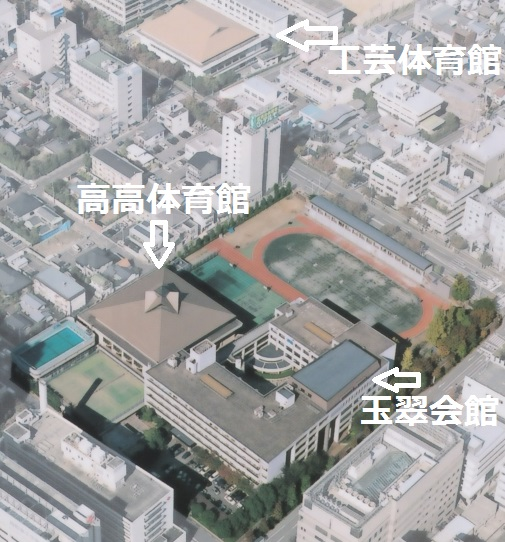
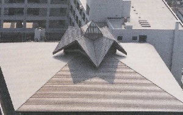
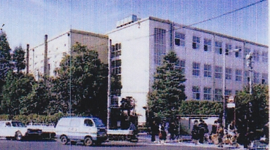
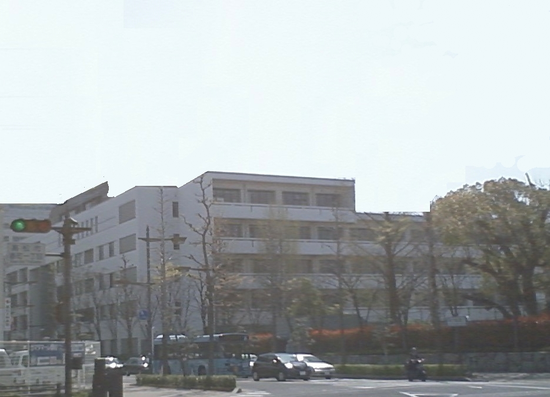
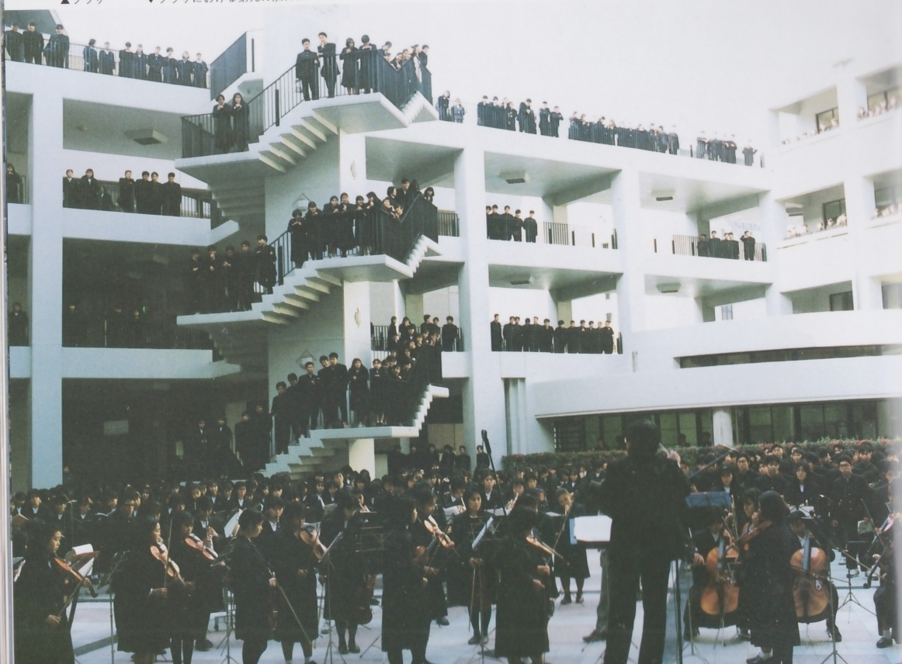
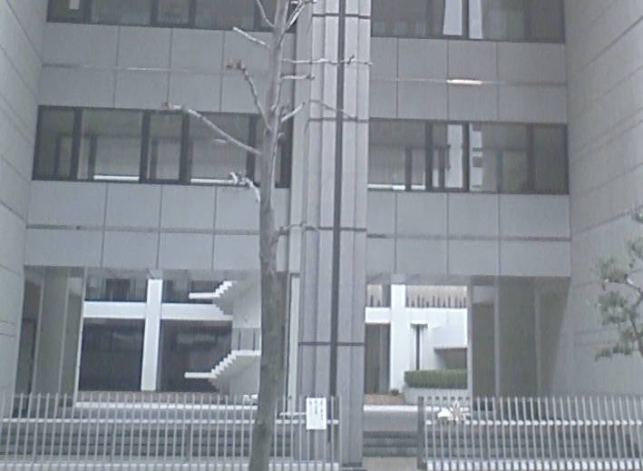

新校舎の建築物語
香川県に勤務し、高松高校新体育館の建築と、新校舎の基本設計の直前まで担当していた藤川宏樹さん（昭和47年高高卒）に、建築当時の話をお伺いしました。
ー最初に藤川さんの簡単な経歴を教えてくださいー
私は昭和５４年に大学院を修了後、香川県庁に入庁しました。新体育館が落成した昭和63年は33歳でした。ー新校舎建築では藤川さんはどのように関わったのですかー
体育館建築では最初から最後まで関わり、その後の校舎改築では基本計画のとりまとめまで担当しました。建築課には職員が何人も在籍していますし、上司もいます。ただ、どの建築の場合もそうですが、実質的に関わる担当者は一人です。
一般的には施主が建築の基本構想を伝えて、あとは設計事務所にほぼ任せると思いますが、香川県庁では建築に積極的に関与する習慣が従来からあり、新体育館、新校舎の基本設計についても、香川県庁が主体的に関わっています。
ーでは、まず新体育館建築の話をお聞かせくださいー
昭和63年に香川県で全国高校総体が開催されることになり、会場となる体育館の整備が急がれました。
そこで、昭和59年に高松工芸高校の体育館の建築を担当することになりました。高松工芸の体育館は１階が武道場、2階が体育館の２層構造としました。
それがうまくいったことから、高松高校の体育館も同一規模同一予算で建築するよう求められ、高松工芸を担当した私が、再度担当することになりました。
高松高校の新体育館設計にあたっては、次のようなことをイメージしました。
高松高校の新体育館は街中の建築ですから、街角やビルから見られることを意識しました。
高松工芸の体育館は用地が長方形であり、またできるだけ天井高を稼ぐことに配慮した結果、入母屋屋根を鉄骨立体トラスで組みました。
高松高校の体育館も同一規模同一予算で作ることを求められたのですが、だからと言って同じものを作るわけに参りません。

新体育館の腰屋根 新しい体育館はどのようなものがふさわしいかと考え、用地がほぼ正方形であるので、道を隔てた高松工芸体育館の入母屋屋根を屋島に見立て、高松高校の体育館は五剣山に見立てることにしました。
そう考えた結果、方形屋根とした上、トップライト付きの腰屋根を載せることにしました。腰屋根は体育館の熱気を抜くために必要で、その形が五剣山を喩えています。
ー新体育館建築と新校舎建築との関係はどのようなものだったのでしょうかー
先に述べたように、新体育館建築は全国高校総体の会場整備のためという側面があり、必ずしも新校舎建築と連動していたわけではありません。ただ、すでに新校舎建築の構想があり、県教育委員会の依頼で日本建築学会が基本調査（基本計画の前段階のようなもの）をしていました。そのため、新体育館を建築するに当たり、改築後の校舎位置関係、大きさなどを確定しておく必要がありました。
そこで、日本建築学会の基本調査に配慮しつつ、校舎の配置計画を見直すこととし、新校舎の基本構想を昭和60年の年末休暇の3日間で一挙にまとめ上げました。
これが校舎改築の基本計画となり、その後の基本設計の基礎となりました。
ー新校舎の構造面で注意したことはどのようなことですかー
注意したことはいくつもありますが、思いつくままに挙げてみます。北側と南側は廊下の左右に教室を配置する中廊下式としました。これにより、教室が外気に接する面積を抑え、従来の学校建設単価に建築費を押さえることができました。
そして、中廊下の内側の教室については、通風と採光を取るために吹き抜けの光庭を設けました。
来客用等のために駐車場の要望が出されましたが、南口の来客用等の駐車場と西口から入る業者の車両以外は校内に車を入れないようにして、生徒の生活ゾーンとの分離を徹底しました。
日赤の建物と校舎が近づきすぎると互いのプライバシーが問題になるので、高松高校の校舎は日赤側から30メートルセットバックしました（この点は建築学会の基本調査の考えを踏襲しています。）

旧校舎
ー藤川さんは途中で異動になりましたが、完成した校舎で残念に思うことはありますかー
甲子園スコアボード移設時に、スコアボードのシルエットを残し、平行移動させたという話を聞き、そこから着想し、北東側（ナルホドー側）から見た旧校舎のシルエットを残そうと思いました。
新校舎(背景を消しています) そこで、北東角を欠け目にして、旧校舎のイメージが残るようにしました。
ただ、予算の関係からか、北面のうち、東側は5階ですが、途中から4階になっているため、その意図が十分活かされていないのは残念でした。
ーご自分がした設計でよかったなあと思う点はありますかー

中庭(プラザ)での『第九』演奏会 最もよかったと思うのは、中庭（プラザ）のスケール感です。
当初の建築学会による基本調査では中庭は非常に小さかったのですが、かなり広く中庭を取りました。
といっても、屋根のある体育館とほぼ同じ広さなのですが、屋根がなくなるとこんなに開放感が出るのかと自分でも驚いた記憶があります。
中庭が活用され、年末恒例の『第九』演奏会が高松高校の新しい伝統となっているのは、本当にうれしいことです。

正門から中庭(プラザ)へ また、正門玄関（文化会館側）が大きく開かれ、中庭に自然に入っていく感じは大変うまくいったと思います。
高松高校の新校舎は、その後校舎に中庭が取り入れられるきっかけになりましたが、この学校への自然な入り方は他校の改築では実現できていないと思います。
それから、東面（文化会館側）は、旧校舎では高いブロック塀が囲っていましたが、かなり老朽化し、通りの景観を著しく壊していました。新校舎になっても、それを高い塀で囲い込んでしまっては景観が台無しになるので、植栽で囲むようにしました。
これにより夏の暑い日に木陰を造り、市民の方にも安らぎを提供していると思います。
ー玉翠会からはどのような要望が伝えられたのですかー
同窓会館建設に関して綾田玉翠会会長を筆頭に建設委員会が立ち上がり、そうそうたる方々と幾度も議論する機会を持ちました。上司もお歴々に怖気づいて誰も関わろうとせず、部長級の先輩と私の二人で参加しましたが、確かにすごい迫力がありました。玉翠会から出された要望の一つは、外から見ても玉翠会館がそこにあることが分かるようにして欲しい、ということでした。
そこで、玉翠会館の天井を高くして、外部からもが玉翠会館の場所が分かるようにしました。（上の高高の全体写真参照）
また、晩翠会からは大楠を動かさないで欲しいと強く要請されました。
その要請に従ってそのままの位置で残せられていれば、日本一のシンボルツリーになったのではないかと思います。
結局は旧正門近くに移植することになりましたが、大楠を移設したところはメモリアルゾーンと名付け、旧正門も併せて保存することにしました。
ー最後に、現役高高生に伝えたいことがあればー
新校舎建設を身近に体験して、あるいはこの新校舎で学んで、建築を志すことになった人を幾人か知っています。建築は報われないことも多いですが、本当にやりがいのある仕事だと思います。志のある方は、思い切ってこの世界へ飛び込んでみてください。
ちなみに、私の娘、息子もこの校舎で育ち、娘は私と同じ、建築の道に進みました。